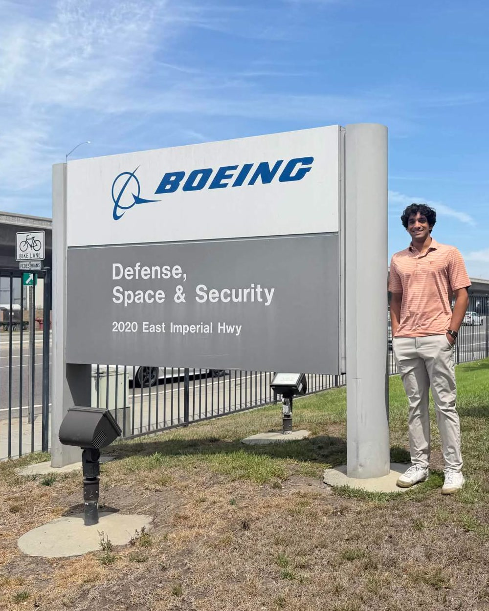

About
My name is Jayden Patel, and I'm a senior mechanical engineering student at UT Austin pursuing a minor in robotics. My experience spans mechanical design, electronics hardware, analysis, manufacturing, and testing.
I've spent the past two summers at Boeing Defense, Space & Security in El Segundo. In 2025, I designed and validated an 8-foot payload lifting system for satellite test operations, and in 2026, I designed a 12-layer backplane for satellite flight hardware, working with high-speed signal routing, PCB manufacturability, and mechanical integration.
Outside of Boeing, I've worked on vehicle dynamics and component design for Longhorn Baja SAE, pneumatic braking systems for Texas Guadaloop, and mechanical systems for UT IEEE's RoboMaster team. Across these projects, I've used tools including Creo, ANSYS, MATLAB, Python, and Siemens Xpedition for design, simulation, and validation.
I'm primarily interested in product design and hardware engineering roles involving mechanical systems, electromechanical integration, and manufacturing.

Education
B.S. Mechanical Engineering, Minor in Robotics · GPA 3.92
IB Diploma